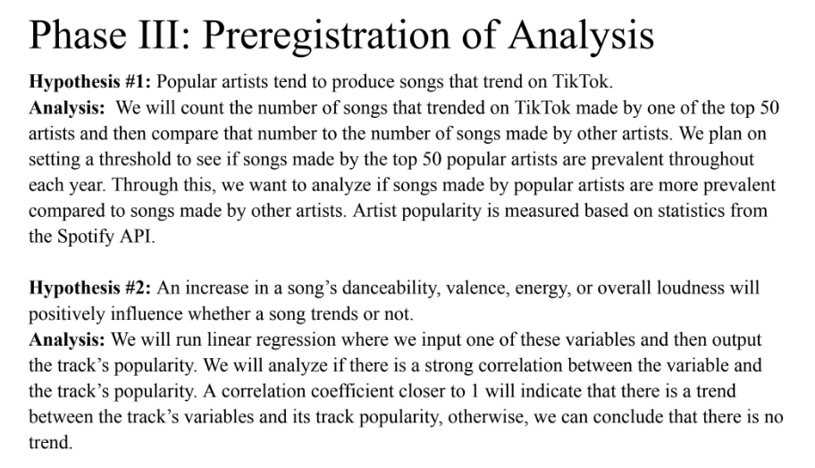
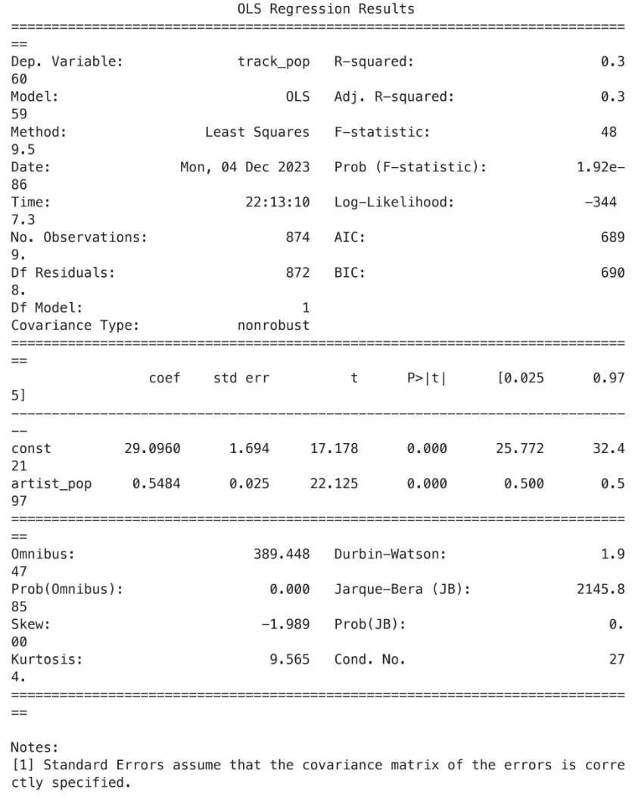
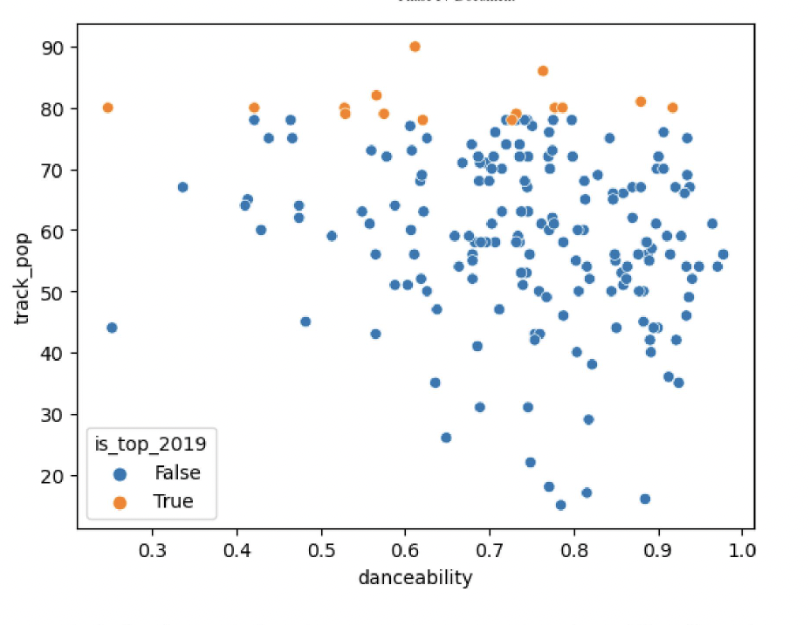
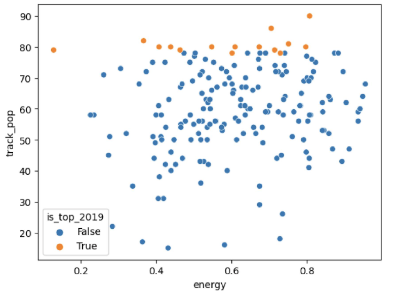
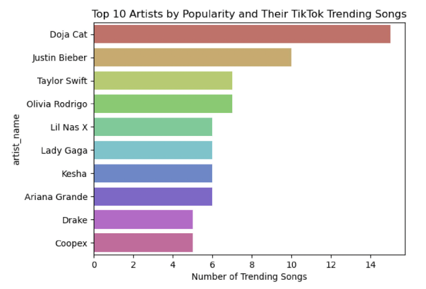
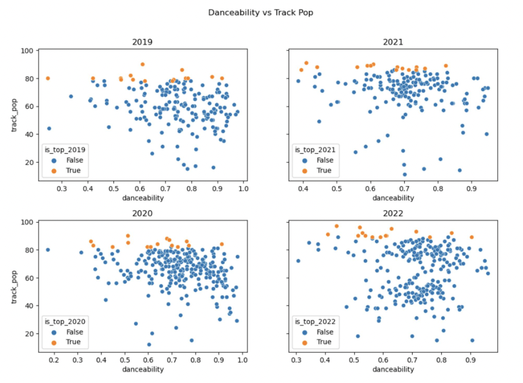

Project Overview
This project aimed to analyze the evolution of trends on TikTok, identify patterns in trending songs, and understand how songs gain or lose popularity. Using a Kaggle dataset collected via the Spotify API, we examined various features like artist popularity, danceability, and loudness.
Process
Our team cleaned and merged datasets from 2019-2022, analyzed features such as track popularity, danceability, energy, valence, and artist popularity, and conducted an OLS regression to identify correlations. Key findings included:
- An increase in a song’s loudness slightly correlates with its popularity.
- Energy and valence do not significantly impact trendiness.
- Danceability, energy, loudness, and valence increased from 2019 to 2022.
- Artist popularity is a strong predictor of song trendiness, with top artists producing about 25% of trending songs.
Skills Demonstrated
- Data analysis using Python, NumPy, Pandas, and SQL.
- Data cleaning and visualization techniques.
- Proficiency in using VSCode for development.
Key Visualizations






View Project
Full IPYNB and VSCode files available upon request.